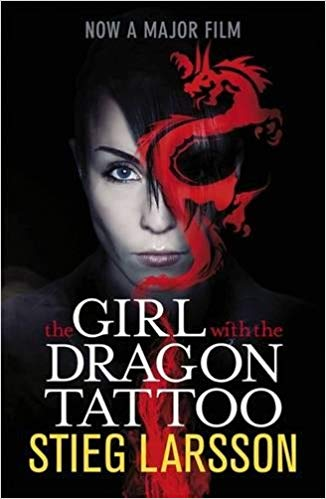
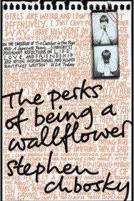

The new HBO series based on Philip Pullman's trilogy.
Author: Melanie Meehan | Date: 11/11/2019
Above: Interview with Cassandra CLare, author of The Mortal Instruments
Above: Tralier for His Dark Materials, now showing on HBO. Based on the trilogy of the same name written by Philip Pullman
Above: A video showing what to expect when visiting Warner Brothers Studio Tour London: The Making of Harry Potter
|  | The Millennium trilogy, of which The Girl With the Dragon Tattoo is the opening instalment, features a classic odd-couple duo: a crusading financial journalist, Mikael Blomkvist, and a freelance private investigator, Lisbeth Salander... |
|  | Charlie is an outsider, a wallflower. He’s not the type of boy to raise his hand in class, dance in the middle of the floor, or make friends easy. But that all changes when he meets the people who will change his life forever... |